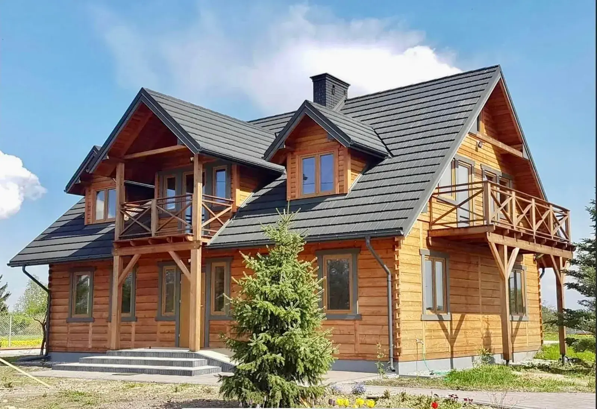
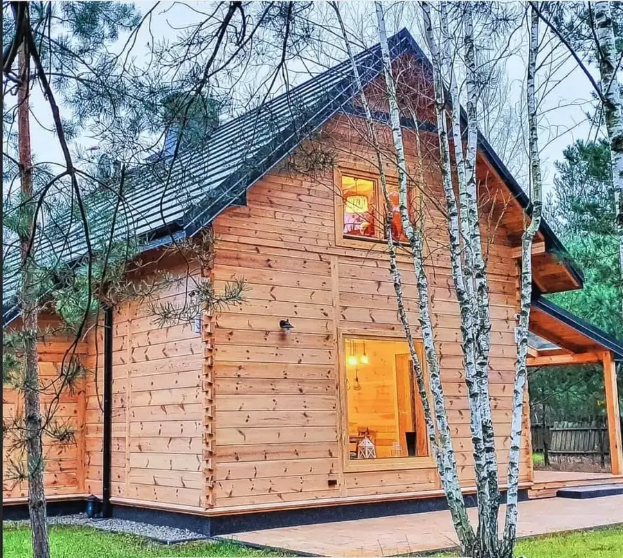
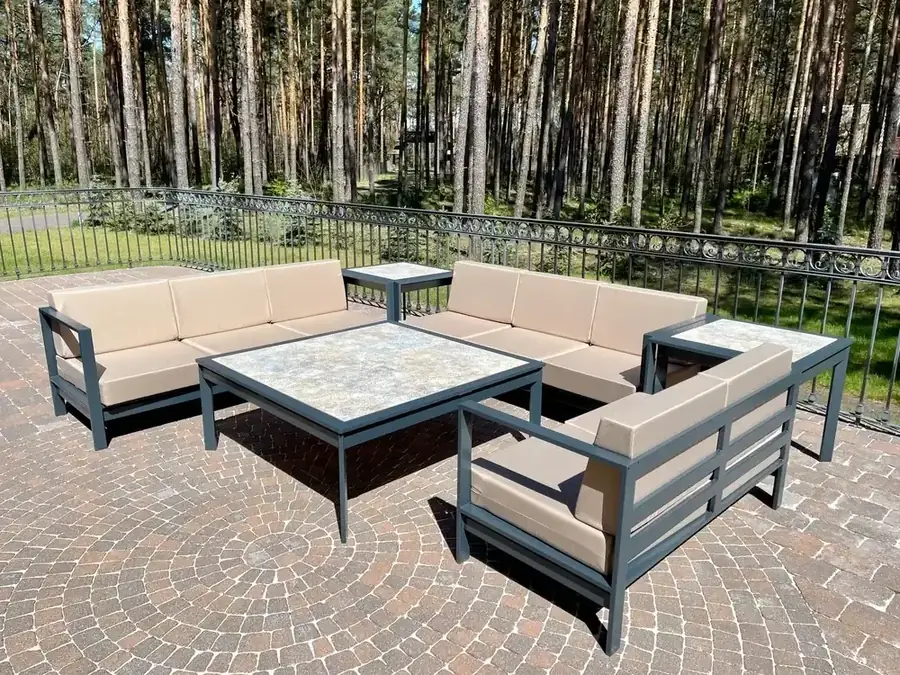
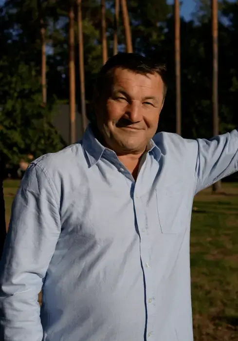
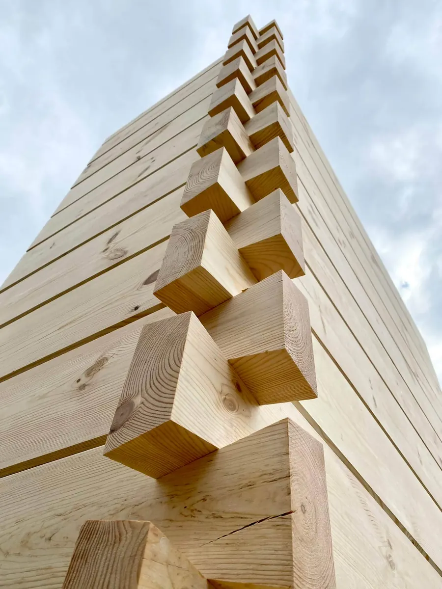

Rodzinna firma ciesielska z Łazów k. Wyszkowa, od 1996 roku
Domy z bali i domy szkieletowe
Budujemy całoroczne i letniskowe domy z polskiego drewna zimowego, od stanu surowego po deweloperski. Nad każdą budową czuwa Stanisław Biernacki, mistrz ciesielstwa. Na konstrukcję domu dajemy 15 lat gwarancji.
Co budujemy
Domy budujemy od podstaw według projektu klienta. Wykonujemy też przebudowy i remonty zabytkowych domów drewnianych, zgodnie z wymogami konserwatora zabytków.

Domy z baliCałoroczne i letniskowe, z bali sosnowych, świerkowych lub modrzewiowych. Od 1 900 zł/m². Domy szkieletoweSzybka budowa, łatwa rozbudowa, dobra izolacja cieplna. Od 1 700 zł/m².
Domy szkieletoweSzybka budowa, łatwa rozbudowa, dobra izolacja cieplna. Od 1 700 zł/m².
 Garaże, wiaty, narzędziówkiTakże altany i tarasy, dopasowane do stylu domu.
Garaże, wiaty, narzędziówkiTakże altany i tarasy, dopasowane do stylu domu.
 Okna i blachodachówkaOkna VEKA i ALUPLAST, blachodachówka Blachodach z rabatem.
Okna i blachodachówkaOkna VEKA i ALUPLAST, blachodachówka Blachodach z rabatem.

Meble Loft BiernackiSofy, fotele i stoliki naszej produkcji, do domu i ogrodu.Cennik domów
Ceny szacunkowe: materiał i budowa domu na działce klienta. Dokładną wycenę przygotujemy na podstawie Twojego projektu. Nie masz projektu? Współpracujemy z biurem architektonicznym, które przygotuje go razem z dokumentami do pozwolenia na budowę.
Surowy otwarty
Ściany zewnętrzne, konstrukcja ścian działowych i stropu, odeskowany dach kryty papą, ganek, balkon, taras i balustrady.
Surowy zamknięty
Zakres stanu otwartego oraz okna PCV, drewniane drzwi zewnętrzne i oblistwowanie okien i drzwi.
Deweloperski
Ocieplenie wełną 20 cm, ścianki działowe z izolacją akustyczną, wylewki, drewniane schody i drzwi, komin systemowy oraz instalacje wodna, kanalizacyjna, elektryczna i c.o.
Ściany domów z bali: zaimpregnowane, suszone komorowo bale sosnowe 7-10/22 cm. Dom z podwójnego bala wyceniamy indywidualnie.
Nasze realizacje
Domy z bali, domy szkieletowe, wiaty i wnętrza, które zbudowaliśmy dla naszych klientów. Kliknij zdjęcie, aby je powiększyć.


Więcej zdjęć z budów pokazujemy na Facebooku i Instagramie.

Ciesielstwo z ojca na syna
„Jako mały chłopiec podpatrywałem mojego ojca Romana Biernackiego w warsztacie i zdobywałem pierwsze doświadczenia. Przez 15 lat pracowałem u mojego ojca, a w 1996 roku założyłem własną firmę, w ramach której kontynuuję dzieło tworzenia domów z drewna.”
Domy z bali budujemy w rodzinie od lat 60. Stanisław Biernacki ma dyplom mistrza ciesielstwa od 2001 roku i sam szkoli swoich pracowników. W jego warsztacie pierwsze kroki stawiają praktykanci z Izby Rzemieślniczej w Wyszkowie, a wielu z nich zostaje w zespole na lata.
Do dziś zbudowaliśmy ponad 200 domów i 100 obiektów mniejszej architektury: wiat, garaży, altan i zadaszeń. Pracujemy według harmonogramu i bez ukrytych kosztów.
Jak łączymy bale
Budujemy zgodnie ze sztuką ciesielską: głębokie zamki w drewnie zamiast gwoździ i wypełniaczy szczelin. Technologię łączeń dopasowujemy do projektu domu.
Metoda sumikowo-łątkowa
Pionowe łątki i poziome sumiki dają sztywną i szczelną konstrukcję. Łączymy je wyłącznie drewnianymi czopami i kołkami (teblami), sumiki na „obce pióro”, a węgły na „jaskółczy ogon”.
Własny patent P.397523
„Przystawka robocza frezarki” wynaleziona przez Stanisława Biernackiego pozwala mechanicznie zacinać węgły na jaskółczy ogon. To większa dokładność połączeń i krótszy czas budowy.
Niezależna konstrukcja wewnątrz domu
Strop opiera się na wewnętrznym szkielecie, a nie na ścianach zewnętrznych. Dzięki temu wnętrze można wykańczać zaraz po zestawieniu domu, bez obawy o pękanie ścian, gdy budynek „pracuje”.
Polskie drewno zimowe
Drewno z rodzimych lasów od sprawdzonych tartaków, suszone komorowo w przemysłowych suszarniach i impregnowane przed montażem, odporne na wilgoć i szkodniki.

Jak powstaje dom
- Ścięcie drewna
- Cięcie pod elementy zabudowy
- Obróbka w tartaku
- Suszenie komorowe
- Obróbka w stolarni
- Montaż na działce klienta
- Wykończenie wnętrza
Porozmawiajmy o Twoim domu
Przedstaw nam swój projekt albo pomysł. Odpowiemy na pytania i przygotujemy bezpłatną wstępną wycenę budowy.
- Telefon602 656 200, 602 656 300
- E-mailbiernacki@domyzbali.pl
- AdresŁazy 95 k. Wyszkowa, 07-130 Łochów, woj. mazowieckie